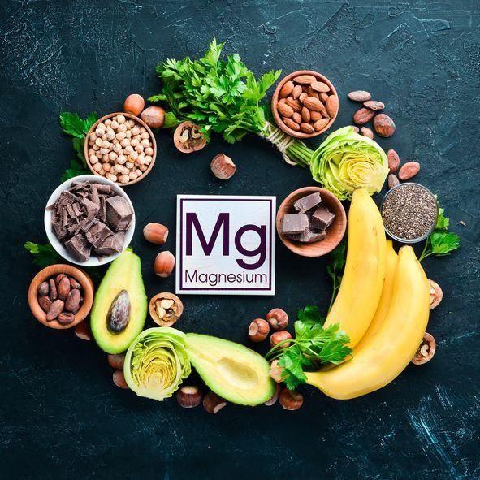
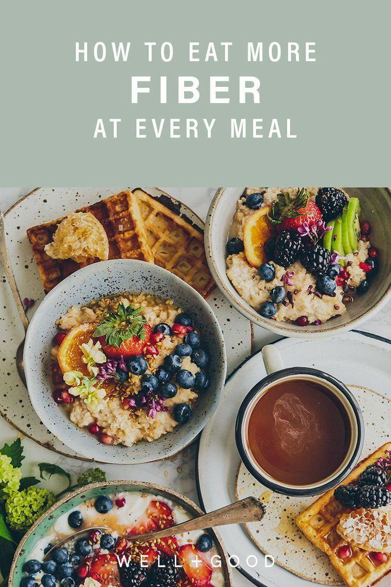
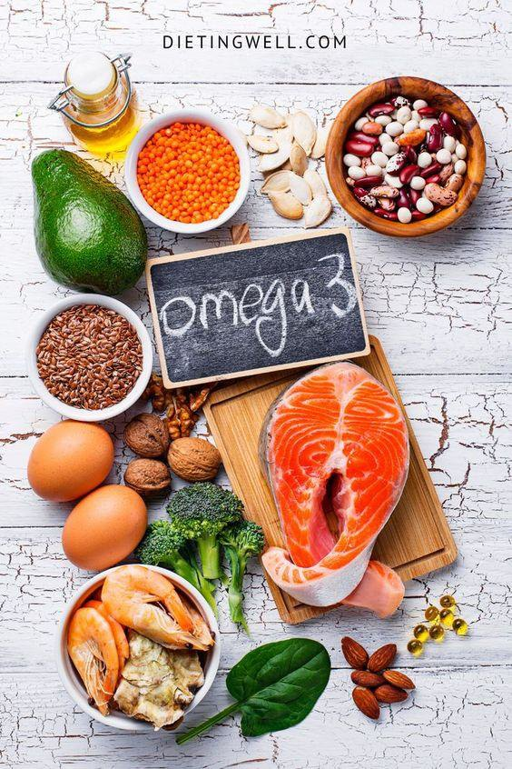
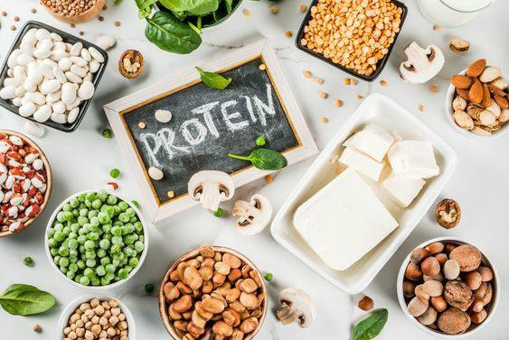
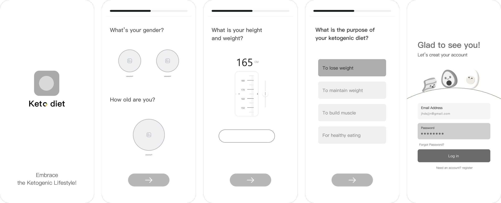
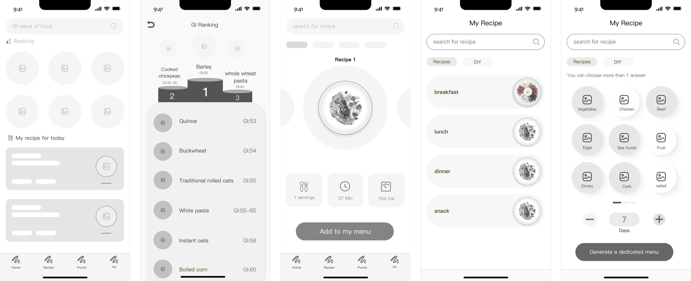
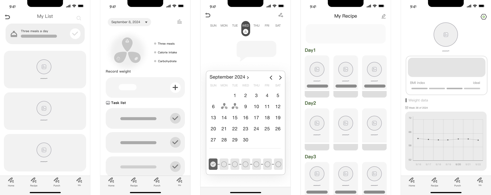
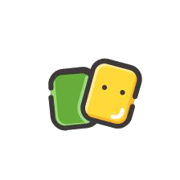
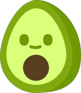

KetogenicDiet
An app that answers the keto dieter's daily question — what do I eat? — and makes every day's nutrients visible at a glance.
Eating keto means reading every label. This app does the reading for you.
The ketogenic diet removes almost all carbohydrates, so dieters must monitor every meal. Existing apps felt complex, generic and tedious to log. This project turns research on real dieters into three simple jobs: know what's low-GI, get a plan you can follow, and see your progress.
Independent AI creator & designer. Research, information architecture, UI and branding — built on my EPQ paper “An Evaluation of the Ketogenic Dieting”.
High fat, moderate protein, almost no carbs.
The ketogenic diet — commonly known as “keto” — supplies large amounts of fat, moderate protein and minimal carbohydrate, shifting the body from burning glucose to burning fat.
Build a keto plate.
Drag foods onto the plate (or tap them). Avo checks your macros live — can you keep carbs under 10% of calories?
Approximate values per typical serving, for illustration.
Avo is waiting. Add something tasty.
Keto has gained significant attention for its potential to address obesity, diabetes and neurological disorders.
A powerful diet — with real trade-offs.
- Weight reduction
- Lower risk of cardiovascular disease
- Aids blood-sugar regulation for type 2 diabetes
- Nutrient deficiencies
- Disrupted gut flora
- Possible adverse cardiovascular effects
- Hard to sustain long-term
Four rules for eating keto well.
Cutting carbs is only half of it. A healthy keto plate still needs micronutrients, fibre, good fats and quality protein.

Vitamins & minerals
Nutrient-dense, low-carb veg like spinach, cauliflower and bell peppers.

Fibre & low-starch veg
Spinach, kale and zucchini provide fibre and micronutrients.

Healthy fats & omega-3
Avocados, olive oil, nuts and high-fat fish support heart health.

Protein quality
Adequate protein prevents muscle loss during weight loss.
What are keto dieters talking about?
Investigate the nature of discussions around the ketogenic diet on social media forums.
~100 newly published posts, coded into themes to find the dominant trends in the keto community.
Most discussion is about recipes and meal planning.
Forums act as a place to record and share progress.
“Lack of energy, insomnia, hair loss, low blood sugar, irregular periods.”
I went keto for two weeks to feel it.
2 prep days, 14 keto days, 2 recovery days. Drag along the timeline to replay each day's blood glucose, sleep, exercise and mood.
Fasting stayed 4.5–4.9 mmol/L through keto.
Lost over the 14 keto days.
Hunger, headache and low energy early on — focus later.
One diet, very different dieters.
“Keto is an almost total elimination of carbohydrates — it requires meticulous monitoring of food intake.”
The view
Not the same as “low-carb” — it is close to no carb, so food labels must be checked again and again.
Who it suits
Epilepsy, PCOS, high blood lipids and cholesterol, blood-sugar control, and people who are overweight.
The advice
Check your body is suitable first, then reduce carbs gradually rather than jumping to zero.
Older participants started for health concerns such as pre-diabetes or weight management. Younger participants were driven by lifestyle goals like weight loss.
Women planned meals and consulted a professional first. Men started with minimal preparation, relying on online communities.
Motivation, preparation and staying power all differ — so the app has to adapt to the individual, not the average.
Typical time most participants stayed on keto.
Older dieters benefited from thorough preparation; younger ones relied on willpower.
Individual differences must shape goals, menus and guidance.
Research and data from my EPQ paper “An Evaluation of the Ketogenic Dieting”.
Where today's apps lose people.
Three pains. Flip them.
🏠 Home
- Home reminder
- GI ranking
- Nourishment
🥗 Recipe
- Food classification
- Search recipes
- Recommended · Custom
📅 Plan
- Lose / maintain weight
- Muscle-building
- Seven-day diet · Add plan
📈 Visualise
- Clock-in · Schedule
- Daily completion
- Weight-change curve
Brainstorm ideas, clustered into four pillars — which became the app's structure.
Which one is lower GI?
The app's GI ranking turns fuzzy food knowledge into a clear order. Test your instinct — tap the food you think raises blood sugar less.
Four tabs. Nothing extra.
Wireframes first, pixels later.
Fifteen greyscale screens tested the full path before any colour was applied. Drag sideways to explore →



Fresh, friendly, a little surprised.
A surprised avocado — keto's signature fat — and a nutrient-ring “o” that echoes the data at the heart of the app.


Click any swatch to recolour the app.
Every prototype on this page updates instantly — icons and the logo shift hue to match. Try a preset, or let it shuffle a harmonious palette.